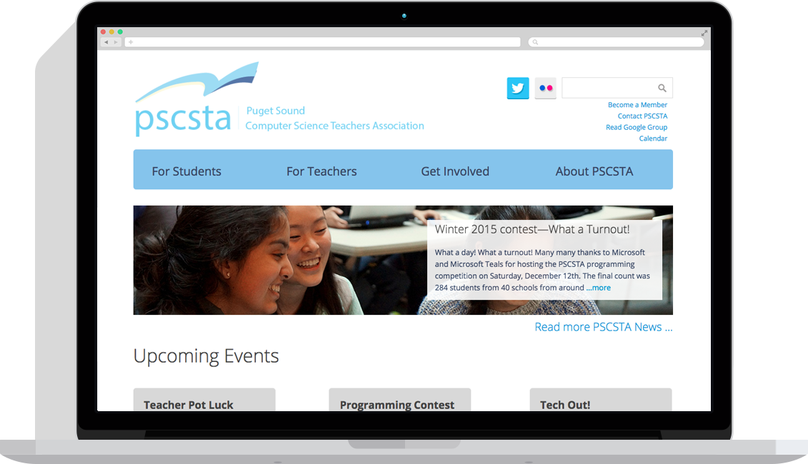

Project Summary
In a team of 4, we redesigned the Puget Sound Computer Science Teachers Association's website using the user-centered design process. We completed user research, built the information architecture, prototyped, conducted usability studies, iterated, and completed development using Wordpress.
Problem Space
The Puget Sound Computer Science Teachers Association had been operating for a few years and were using Blogger for their website needs. Unfortunately, they began hosting student events and were having trouble maintaining the website and using it for student registration and tracking teacher workshops.
How might we improve the PSCSTA website to allow students to register for events, and teachers to access workshop materials.
Process
We completed the user-centered design process to redesign the website. We started with interviews with teachers and students in order to establish our personas. Next, we completed numerous card sorts and iterated on an information architecture for the website.
During the prototyping phase we built an Axure prototype that was used in usability studies. After numerous iterations and stake-holder meetings we moved forward with development in Wordpress.
Results
All of our implementations are still in use by the organization, they especially aprpeciate that we developed in Wordpress as they have been able to make changes with little time or effort.
Title
Puget Sound Computer Science Teachers Association Website Redesign
Date
Mar 2014 - Aug 2014
Links
{kind=link}
{kind=link}
Tasks
- User Research
- Usability Studies
- Interviews
- Information Architecture
- Content Strategy
- Web Design
- Web Development
Tools
- Optimal Sort Card Sort
- Axure
- HTML/CSS
- JavaScript
- PHP
- Wordpress